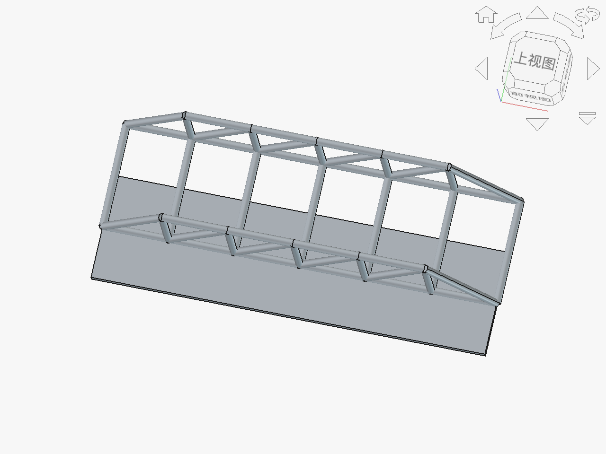

一、教材分析
本节为苏教版《技术与设计2》第一单元"结构及其设计"的第3节，是承接结构受力分析后的核心实践环节。教材以"设计一座简易人行便桥"为载体，引导学生经历从需求分析、方案构思、受力分析、材料选择到模型制作与测试的完整结构设计过程。本节在单元中起承上启下作用——既是对前两节结构类型与受力知识的综合应用，也为后续"结构的欣赏与评价"提供实践基础。
教材强调"做中学"理念，要求学生在真实情境中运用工程思维解决结构设计问题。结合OBE（成果导向教育）理念，本节课的预期学习产出定义为：学生能独立完成一座满足约束条件的人行便桥结构设计方案，并通过对实体模型的承重测试验证设计合理性，形成"设计—验证—迭代"的工程闭环思维。这一产出目标贯穿教学全过程，所有活动均围绕该产出进行反向设计。
二、学情分析
高二学生已在物理课程中学习了力的合成与分解、杠杆原理等力学基础知识，具备初步的受力分析能力，但将物理知识迁移到结构设计中仍存在困难。学生已了解梁桥、拱桥、桁架桥的基本类型，但对不同桥型的受力特点缺乏深度对比经验。在实践层面，学生有过简单的手工制作经历，但缺乏系统化的结构设计方法指导。此外，学生对生成式AI（GAI）工具有一定使用经验，但多数将其作为"答案搜索器"，缺乏将其作为"工程顾问"进行交互式探究的意识与能力。
三、教学目标（五维核心素养）
技术意识
理解结构设计在工程实践中的价值，形成"安全第一、经济合理"的工程伦理意识
工程思维
掌握"结构设计五步法"，能运用系统化思维完成需求分析至迭代优化的全过程
创新设计
能构思2-3种桥型方案，结合AI建议进行创新性优化，形成独特设计方案
图样表达
能用手绘草图表达桥型结构方案，标注关键尺寸和受力方向
物化能力
能用A4纸/冰棍棒/白胶/棉线等材料制作桥模，完成承重测试并记录数据
四、教学重难点
教学重点
- 结构设计五步法的理解与应用（需求分析→选型构思→受力分析→材料选择→优化迭代）
- 运用AI作为"工程顾问"进行方案可行性分析与比选
- 桥模的制作与承重测试，实现"虚实双线"验证
教学难点
- 将AI的建议与物理力学知识结合，批判性地判断AI结论的合理性
- 根据测试结果进行有针对性的结构迭代优化，而非盲目修改
- 理解有限元分析（FEM）应力分布图与实际结构薄弱点的对应关系
五、教学策略与方法
OBE反向设计 本课以"产出一座满足约束条件的桥模及完整设计文档"为终点，倒推教学活动序列。采用项目化学习（PBL）为主线，融合OBE-GAI范式实施虚实双线教学：虚线为AI仿真预演与FreeCAD FEM有限元分析，实线为实体模型制作与承重测试。
分层提示词策略 针对不同能力水平学生设计分层AI提示词：
- 基础组：使用结构化提示词模板，引导AI分析单一桥型的受力特点
- 提升组：要求AI多维度对比2-3种桥型方案，给出改进建议
- 高阶组：自主设计提示词，要求AI进行有限元分析模拟和参数优化建议
所有学生须填写《GAI交互记录表》，记录AI建议内容及采纳/否决理由，培养批判性使用意识。
🔧 原创教学工具：结构设计五步法
需求分析（明确跨度、载荷、材料限制）→ 选型构思（2-3种候选桥型）→ 受力分析（压力线、拉压杆判断）→ 材料选择（强度与经济性平衡）→ 优化迭代（测试反馈驱动改进）
六、教学过程
环节一：情境导入——村庄便桥重建任务
情境创设：教师播放一段30秒短视频：某山区村庄因暴雨导致旧木桥损毁，村民出行困难，急需新建一座人行便桥。桥的跨度需≥30cm（缩比模型），只能使用A4纸、冰棍棒、白胶、棉线等简易材料，要求承载≥400g重物。
任务发布：教师宣布本节课的核心任务——"作为小小结构工程师，为该村庄设计并制作一座满足约束条件的人行便桥模型"。引导学生明确设计的三大约束：跨度约束（≥30cm）、材料约束（限用规定材料）、载荷约束（≥400g）。
OBE产出锚定：教师展示预期学习产出——每位同学须提交：①桥梁设计方案表（含AI交互摘要）；②手绘结构草图；③实体桥模（通过承重测试）；④迭代优化记录。让学生明确"学完这节课我能做出什么"。
环节二：概念建构——结构设计五步法与桥型受力对比
Step 1：五步法引入（5分钟）
教师以"建一座桥需要想清楚哪些问题"为引，引导学生自然推导出结构设计五步法的逻辑序列。通过板书呈现五步流程图，并举例说明每一步的关键问题：
- 需求分析：桥要多长？承多重？用什么材料？
- 选型构思：梁桥、拱桥还是桁架桥？各有什么优劣？
- 受力分析：力是怎么传递的？哪里受拉、哪里受压？
- 材料选择：哪种材料适合受拉？哪种适合受压？
- 优化迭代：测试结果如何指导下一步改进？
Step 2：课前AI探究成果分享（5分钟）
课前布置任务：学生使用AI工具对比梁桥、拱桥、桁架桥的受力特点，填入《桥型受力对比探究单》。课上请2-3位学生分享AI给出的对比结果，并说明自己认为哪些结论可信、哪些需要质疑。
典型学生分享："AI说拱桥主要通过拱形将竖向荷载转化为轴向压力，适合抗压材料；桁架桥通过三角形单元分散受力，整体刚度好但节点复杂。我觉得拱桥的结论跟物理课学的力的分解一致，可信度较高。但AI说'桁架桥制作难度是拱桥的2倍'这个量化结论我不太认可，因为制作难度还取决于具体工艺。"
Step 3：FreeCAD有限元分析展示（5分钟）
教师展示课前用FreeCAD建立的正弦拱桁架桥三维模型，并运行FEM有限元分析模块，展示应力分布云图和变形图。
- 应力云图解读：红色区域（高应力）集中在拱顶和桁架下弦杆跨中节点，蓝色区域（低应力）出现在拱脚附近
- 变形图解读：跨中最大挠度约2.3mm，发生在集中载荷作用点
- 虚实对照引导："同学们看，有限元分析告诉我们结构最薄弱的位置在哪里——这些就是我们实体模型制作时需要特别加固的地方。这就是'虚线'仿真预演的价值：在动手之前先预判风险。"
渲染图：Warren桁架桥 (TrussBridge)

该模型含52个部件，展示Warren型桁架桥的完整结构——上下弦杆、斜杆、端柱、横梁和桥面板。学生可观察桁架受力传递路径，分析各杆件受拉/受压状态，为纸桥承重比赛提供结构参考。
环节三：深度探究——AI辅助方案构思与比选
Step 1：个人方案构思（5分钟）
学生根据需求分析结果，快速构思2-3种桥型方案，用手绘草图表达。教师巡视指导，确保每个方案标注了桥型、跨度、关键尺寸和预计承重。
Step 2：AI工程顾问咨询（7分钟）
学生将自己构思的方案用自然语言描述给AI，请求AI作为"工程顾问"分析可行性和薄弱点。教师提供分层提示词模板：
AI典型回复（示例）：
- 薄弱点1：空心圆管拱顶处可能因局部屈曲失稳，建议在拱顶增加横向支撑
- 薄弱点2：拱脚处水平推力较大，A4纸管可能滑移，建议用冰棍棒做拱脚基座并固定
- 薄弱点3：2层纸管壁厚不足，建议增加到3-4层或填充棉线增强抗剪
批判性判断环节：学生需结合物理知识判断AI建议是否合理。例如，针对"拱脚水平推力"问题，学生用力的分解验证：400g载荷在30cm跨度拱桥上产生的水平推力约为F=P×L/(4h)，若拱高5cm则水平推力约600g——确实需要加固拱脚。学生将分析结论记入《桥梁设计方案表》。
Step 3：方案比选决策（3分钟）
学生要求AI按"强度、经济性、制作难度"三维度对比候选方案，获得对比表后结合自身判断做出最终选择。教师强调：AI给出的对比是参考，最终决策权在学生手中——这就是"工程顾问"而非"答案生成器"的定位。
| 候选方案 | 强度评分 | 经济性评分 | 制作难度 | 综合评价 |
|---|---|---|---|---|
| 方案A：梁桥（纸管叠合） | 6/10 | 9/10 | 低 | 简单但承重有限 |
| 方案B：拱桥（纸管拱+冰棍棒基座） | 8/10 | 7/10 | 中 | 承重好，推荐 |
| 方案C：桁架桥（冰棍棒三角桁架） | 9/10 | 5/10 | 高 | 最强但耗时长 |
学生将最终选定的方案及理由填入《桥梁设计方案表》，其中包含GAI交互摘要（AI提供了哪些建议）和采纳说明（采纳了哪些建议、否决了哪些、原因是什么）。
环节四：迁移应用——模型制作与承重测试（虚实双线验证）
Step 1：模型快速制作（5分钟）
学生根据选定方案快速制作桥模（本环节在课前预习基础上进行组装与加固，课堂聚焦关键工艺）。教师提醒关注AI指出的薄弱点位置进行针对性加固。
Step 2：承重测试与数据记录（3分钟）
各组将桥模放置在测试台上，逐步增加载荷（每次100g），记录桥模失效前的最大承重值和失效位置。教师引导学生观察失效位置是否与FreeCAD FEM分析预测的薄弱点一致——这就是"虚实双线"交汇验证的关键时刻。
学生填写对照表：FEM预测的应力集中位置 → 实际失效位置 → 一致性分析。若不一致，引导学生思考原因（材料差异、制作工艺偏差、边界条件简化等），深化对仿真与实际差异的理解。
课后延伸：布置课后任务——用AI查询"有限元分析在桥梁优化中的应用"，了解FEM在真实工程中的应用场景，将课堂的缩比模型体验与真实工程实践建立连接。
环节五：总结反思——五步法回顾与工程思维升华
教师带领学生回顾结构设计五步法，强调"设计—验证—迭代"是工程实践的核心逻辑。提问引导反思："如果再做一次，你会怎样改进你的桥？""AI的建议哪些最有用？哪些你不同意？为什么？"
最后点明本课OBE产出目标的达成情况，并预告下节课"结构的欣赏与评价"将进入更宏观的结构审美与文化视角。
七、板书设计
八、教学反思预设
- OBE产出达成度：预期约80%学生能完成满足约束条件的桥模，15%学生能进行有针对性的迭代优化。若承重测试通过率低于60%，需反思需求约束是否设置过高或材料供给是否充足。
- AI批判性使用效果：需关注学生是否真正进行了批判性判断，而非全盘接受AI建议。可通过检查《GAI交互记录表》中"否决理由"栏的填写质量来评估。预期部分学生可能出现"AI说什么就改什么"的现象，需在下节课强化批判意识。
- 虚实双线衔接：FreeCAD FEM分析展示是本课亮点，但可能因学生力学基础不足而难以深入理解应力云图。需控制讲解深度，聚焦"红色=薄弱点"这一核心信息，避免陷入有限元理论细节。
- 分层教学实施：分层提示词策略在2课时中可能时间紧张，可考虑将基础组任务简化为"单一桥型受力分析"，将高阶组的有限元模拟作为课后拓展。
- 时间分配风险：模型制作与测试环节可能超时，建议提前布置部分制作任务到课前完成，课堂聚焦组装、加固与测试。
九、AI应用说明
范式定位：OBE-GAI模式（核心案例）
本教案是OBE-GAI范式的核心实践案例，AI在整个教学过程中始终扮演"工程顾问"角色，而非"答案生成器"。具体体现在：
| 环节 | AI应用方式 | 顾问定位体现 | 学生批判性任务 |
|---|---|---|---|
| 课前 | AI对比三种桥型受力特点 | 提供专业知识参考 | 判断AI结论与物理知识是否一致 |
| 课中（构思） | AI分析方案薄弱点并给改进建议 | 提供工程经验咨询 | 用力学知识验证AI建议合理性 |
| 课中（比选） | AI多维度对比候选方案 | 提供决策辅助信息 | 结合实际条件做出最终决策 |
| 课后 | AI查询FEM在桥梁优化中的应用 | 拓展工程视野 | 整理FEM应用场景报告 |
分层提示词设计
GAI交互记录表（桥梁设计方案表核心字段）
| 字段 | 说明 |
|---|---|
| 方案描述 | 学生用文字描述构思的桥型方案 |
| GAI交互摘要 | 记录向AI提出的问题及AI的主要建议 |
| 采纳建议 | 列出采纳的AI建议及采纳理由 |
| 否决建议 | 列出否决的AI建议及否决理由（批判性核心） |
| 最终方案 | 经批判判断后的确定方案 |
| 测试结果 | 承重测试数据与失效位置记录 |
| 迭代记录 | 基于测试结果的优化改进方案 |
FreeCAD模型引用说明
本课引用正弦拱桁架桥FreeCAD模型，通过FEM模块计算应力分布和变形量，为实体模型制作提供仿真预演。具体应用：
- 模型展示：正弦拱桁架桥三维结构，包含拱梁、桁架杆件、桥面系
- 应力分析：施加载荷后展示应力云图，红色=高应力区（薄弱点）
- 变形分析：展示结构变形图，标注最大挠度位置
- 虚实对照：将FEM预测的薄弱点与实体模型实际失效位置进行对比验证
渲染图：Warren桁架桥 (TrussBridge)
该模型含52个部件，展示Warren型桁架桥的完整结构——上下弦杆、斜杆、端柱、横梁和桥面板。学生可观察桁架受力传递路径，分析各杆件受拉/受压状态，为纸桥承重比赛提供结构参考。